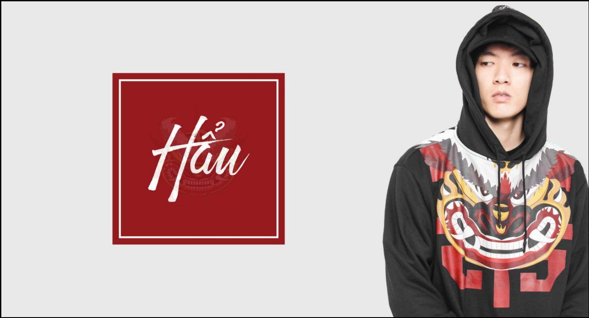

Brand được hình thành vào tháng 3/2016 sau đợt tết năm con hổ và hướng tới các đói tượng là các bạn trẻ yêu mến thời trang và phong thủy Việt Nam
Collection đầu tiền của Brand đánh vào con giáp của năm và các bạn mạng lửa . Brand mong muốn có một thời gian hoạt động lâu dài và bền vững . Là người bạn đồng hành đi bên và cùng phát triển phong cách stress style Việt Nam
"Mặc dù bây giờ tôi có cuộc sống thoải mái, nhưng không phải luôn luôn là như vậy. Khi còn nhỏ, tôi lớn lên giữa chiến tranh tàn phá ở Italy"
"Một ngày, chúng tôi chơi với một vỏ bom chưa nổ, sau đó, nó bất ngờ phát nổ, giết chết người bạn của tôi và đốt cháy tôi từ đầu đến chân. Mắt tôi suýt bị mù và không nhìn thấy một thời gian, còn da phải ngâm trong rượu để làm dịu những vết bỏng. Đến giờ tôi vẫn còn có vết sẹo trên mắt cá chân", Armani từng kể lại quá khứ không êm đềm.
Tốt nghiệp phổ thông, Giorgio Armani theo học ngành y với kỳ vọng sẽ trở thành một bác sĩ chuyên khoa phẫu thuật. Nhưng sự khó khăn khi tiếp xúc với người bệnh đã khiến ông bỏ học, về nhà làm những công việc vặt vãnh.
Tưởng như cuộc đời Armani sẽ trôi đi trong bế tắc và sự tẻ nhạt, thì trong một lần du lịch tới Milan, ông đã bị kinh đô thời trang cuốn hút và bắt đầu suy nghĩ đến con đường đầy thú vị này. Từ đây thế giới của ông, những thứ xung quanh ông gắn liền với thế giới thời trang như một định mệnh đã được sắp đặt.